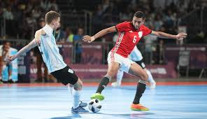
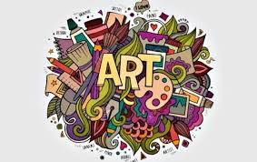

Perkembangan Teknologi AI
Teknologi berkembang sangat pesat di era digital, salah satunya adalah kecerdasan buatan (Artificial Intelligence/AI). AI memungkinkan komputer untuk melakukan tugas seperti manusia, seperti mengenali wajah, memahami suara, hingga memberikan rekomendasi. Dengan adanya AI, banyak pekerjaan menjadi lebih cepat dan efisien, namun manusia juga perlu terus belajar agar tidak tertinggal.

Olahraga Futsal
Olahraga merupakan aktivitas penting untuk menjaga kesehatan tubuh. Dengan rutin berolahraga, tubuh menjadi lebih bugar, kuat, dan memiliki daya tahan yang lebih baik terhadap penyakit. Futsal juga melatih kerja sama tim dan refleks tubuh secara menyeluruh.

Seni dalam Kehidupan
Seni adalah bagian penting dalam kehidupan manusia. Ia hadir dalam berbagai bentuk seperti musik, lukisan, tari, dan desain. Melalui seni, seseorang dapat mengekspresikan perasaan, ide, dan kreativitas dengan cara yang unik dan menarik.